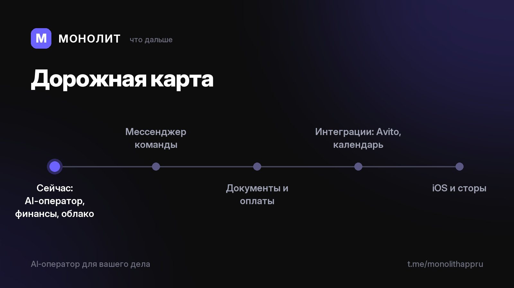

Дневник разработки · 02.07.2026
Дорожная карта, что дальше

Дорожная карта: что дальше
Что уже есть: AI-оператор (голос → заказ с этапами), финансы, команда, напоминания, облако с шифрованием.
Что впереди:
📨 Мессенджер команды прямо в приложении
📄 Документы и оплаты: договор, счёт, акт в два клика
🔗 Интеграции: Avito, календарь, контакты
🍏 iOS и публикация в сторах
Я строю МОНОЛИТ на свои, без инвестиций. Продукт уже работает, стратегия ясна, не хватает только скорости.
Если вы видите потенциал в AI-операторе для миллионов фрилансеров и малых команд — напишите мне: @sbphotoshoter. Ищу партнёра-инвестора, чтобы ускориться.
А если хотите просто поддержать: подпишитесь и покажите канал другу, которому надоел хаос в заказах. Это бесплатно и очень помогает.
МОНОЛИТ — учёт заказов, клиентов и денег одной фразой. Windows и Android, бесплатная бета.
Скачать Читать канал